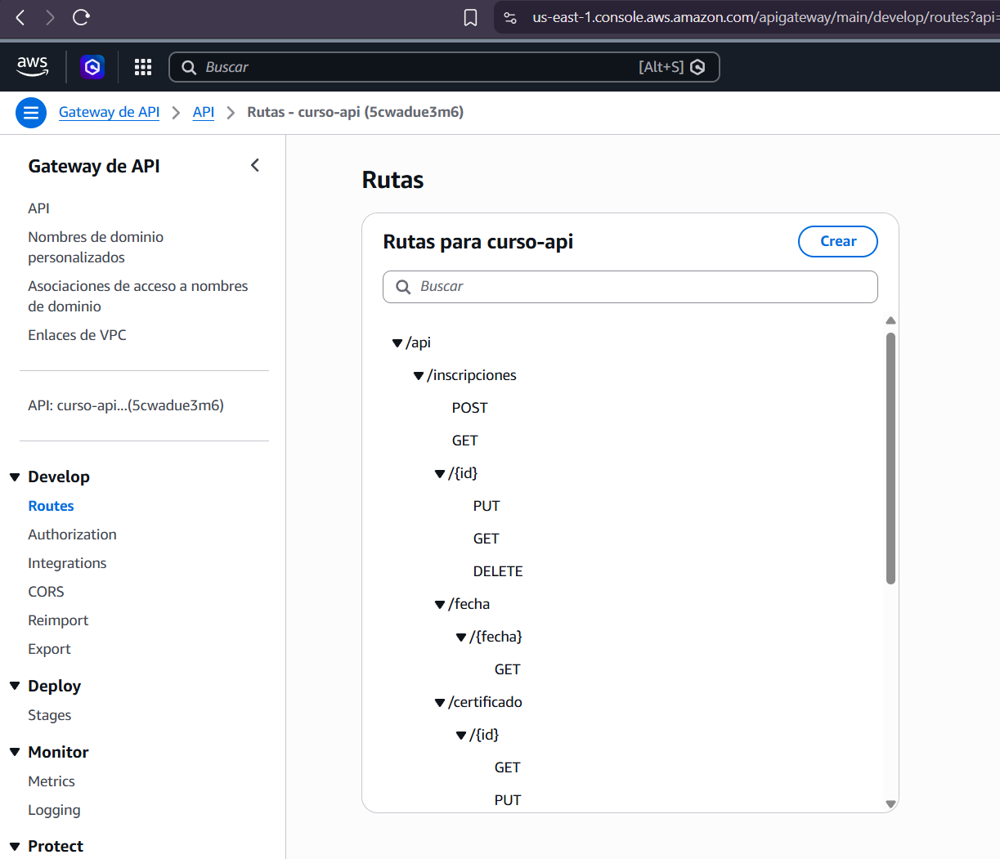
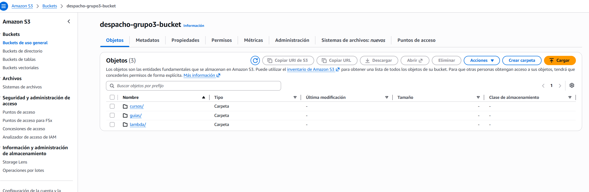
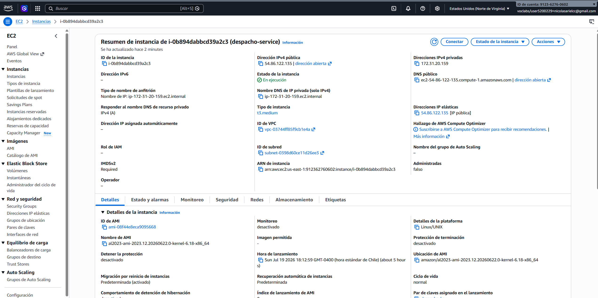

El proyecto cursos_online implementa una plataforma Cloud Native de gestión de transporte compuesta por dos microservicios Spring Boot que se comunican de forma asíncrona mediante RabbitMQ (patrón productor-consumidor). El sistema permite la gestión completa de guías de despacho y transportistas, integrando autenticación con Azure AD B2C, almacenamiento cloud en AWS S3, y despliegue automatizado mediante Docker + GitHub Actions sobre una instancia EC2.
┌─────────────────────────────────────────┐
│ Docker Network: cloud-network │
│ │
Cliente ──(JWT)──▶ Producer (:8080) │
(Postman) │ ├─ SecurityConfig (Azure AD B2C) │
│ ├─ RabbitMQProducer ──▶ RabbitMQ │
│ └─ RestTemplate ──(HTTP GET)──┐ │
│ │ │
│ RabbitMQ │ │
│ (host=rabbitmq)│ │
│ │ │
│ Consumer (:8081) ◀──listen─────┘ │
│ ├─ RabbitMQListener │
│ ├─ H2 Database (JPA) │
│ ├─ GuiaService + TransportistaService │
│ └─ AWS S3 (subida/descarga/eliminación) │
│ │
└─────────────────────────────────────────┘Archivo raíz: pom.xml
<groupId>com.duoc</groupId>
<artifactId>transportmanagement</artifactId>
<version>0.0.1-SNAPSHOT</version>
<modules>
<module>transportmanagement-producer</module>
<module>transportmanagement-consumer</module>
</modules>
| Módulo | Puerto | Descripción | Spring Security |
|---|---|---|---|
transportmanagement-producer | 8080 | BFF — Orquesta llamadas, expone API REST securitizada, envía mensajes a RabbitMQ | Sí (Azure AD B2C) |
transportmanagement-consumer | 8081 | Servicio interno — Procesa mensajes de RabbitMQ, lógica de negocio, acceso a BD y S3 | No |
transportmanagement-producer/pom.xml
spring-boot-starter-web — API RESTspring-boot-starter-data-jpa — Persistencia JPAspring-boot-starter-amqp — RabbitMQspring-boot-starter-security — Seguridadspring-boot-starter-oauth2-resource-server — JWT Azure AD B2Cspring-security-oauth2-jose — Validación JWTspring-boot-starter-validation — Validaciones Jakartaspring-boot-starter-actuator — Health checkstransportmanagement-consumer/pom.xml
spring-cloud-aws-dependencies (BOM v2.3.0) y spring-cloud-aws-messaging para S3Versiones: Java 21 · Spring Boot 3.5.14 · Spring Cloud AWS 2.3.0 · Lombok 1.18.46
transportmanagement-producer/src/main/java/com/duoc/transportmanagement/
| Método | Endpoint | Descripción | Comunicación |
|---|---|---|---|
GET | /api/guias | Listar todas las guías | HTTP → Consumer |
GET | /api/guias/{id} | Obtener guía por ID | HTTP → Consumer |
POST | /api/guias | Crear guía | RabbitMQ (async) |
PUT | /api/guias/{id} | Modificar guía | RabbitMQ (async) |
DELETE | /api/guias/{id} | Eliminar guía | RabbitMQ (async) |
GET | /api/guias/transportista/{id} | Buscar por transportista | HTTP → Consumer |
GET | /api/guias/fecha/{fecha} | Buscar por fecha | HTTP → Consumer |
POST | /api/guias/s3/{id} | Subir archivo a S3 | RabbitMQ (async) |
PUT | /api/guias/s3/{id} | Actualizar archivo en S3 | RabbitMQ (async) |
GET | /api/guias/s3/{id} | Descargar archivo de S3 | HTTP → Consumer |
DELETE | /api/guias/s3/{id} | Eliminar archivo de S3 | RabbitMQ (async) |
| Método | Endpoint | Descripción | Comunicación |
|---|---|---|---|
GET | /api/transportistas | Listar transportistas | HTTP → Consumer |
GET | /api/transportistas/{id} | Obtener transportista | HTTP → Consumer |
POST | /api/transportistas | Crear transportista | RabbitMQ (async) |
PUT | /api/transportistas/{id} | Modificar transportista | RabbitMQ (async) |
DELETE | /api/transportistas/{id} | Eliminar transportista | RabbitMQ (async) |
Total: 17 endpoints REST que devuelven datos en formato JSON.
RestTemplate → ConsumerClient → Consumer (:8081)ConsumerClient.java — transportmanagement-producer/service/
@Component
public class ConsumerClient {
@Autowired private RestTemplate restTemplate;
@Value("${aws.consumer.url}") private String consumerUrl;
public GuiaDTO findGuiaById(Long id) {
return restTemplate.getForObject(consumerUrl + "/api/guias/" + id, GuiaDTO.class);
}
public List<GuiaResumenDTO> findAllGuias() {
return restTemplate.exchange(consumerUrl + "/api/guias", ...);
}
// Métodos similares para transportistas, búsqueda por fecha, descarga S3
}
| Controller | Endpoints | Propósito |
|---|---|---|
GuiaController | 5 (GET) | Consultas de guías desde BD |
TransportistaController | 2 (GET) | Consultas de transportistas |
RabbitMQController | 2 (POST) | Procesamiento manual de colas (prueba) |
S3Controller | 6 | Gestión completa de archivos S3 |
| Entidad | Campos principales |
|---|---|
GuiaDespacho |
id (PK), numeroGuia (unique), fechaGeneracion, cliente, direccionEntrega, descripcionCarga, estado, rutaEfs, rutaS3, transportista (@ManyToOne) |
Transportista |
id (PK), nombre (@NotBlank), rut (@NotBlank), telefono (@NotBlank), correo (@NotBlank) |
| Requisito | Estado | Evidencia |
|---|---|---|
| Microservicios en Spring Boot | ✅ | 2 módulos Spring Boot 3.5.14 con Java 21 |
| API REST con JSON | ✅ | 17 endpoints en Producer + 14 en Consumer |
| BFF que orquesta llamadas a colas | ✅ | Producer: lecturas HTTP a Consumer, escrituras vía RabbitMQ |
| 2 endpoints que llamen a cola | ✅ | POST /api/guias (produce), POST /api/rabbit/guia/procesar (consume) |
| CRUD completo | ✅ | Create, Read, Update, Delete para guías y transportistas |
| Host | rabbitmq (nombre del contenedor Docker en red cloud-network) |
| Puerto | 5672 |
| Credenciales | guest / guest |
| Imagen | rabbitmq:3-management |
El sistema define 4 colas principales + 2 DLQ para guías y transportistas.
| Componente | Nombre | Tipo | Propiedades |
|---|---|---|---|
| Exchange | guia.exchange | Direct | — |
| Cola principal | guia.queue | Durable | DLX → guia.dlx.exchange |
| DLX Exchange | guia.dlx.exchange | Direct | — |
| Dead Letter Queue | guia.dlq | Durable | — |
| Componente | Nombre | Tipo | Propiedades |
|---|---|---|---|
| Exchange | transportista.exchange | Direct | — |
| Cola principal | transportista.queue | Durable | DLX → transportista.dlx.exchange |
| DLX Exchange | transportista.dlx.exchange | Direct | — |
| Dead Letter Queue | transportista.dlq | Durable | — |
RabbitMQConfig.java (ambos módulos)
@Configuration
public class RabbitMQConfig {
@Bean public DirectExchange guiaExchange() { return new DirectExchange("guia.exchange"); }
@Bean public Queue guiaQueue() {
return QueueBuilder.durable("guia.queue")
.withArgument("x-dead-letter-exchange", "guia.dlx.exchange")
.withArgument("x-dead-letter-routing-key", "guia.dlq")
.build();
}
@Bean public DirectExchange guiaDlxExchange() { return new DirectExchange("guia.dlx.exchange"); }
@Bean public Queue guiaDlq() { return QueueBuilder.durable("guia.dlq").build(); }
@Bean public Jackson2JsonMessageConverter jsonMessageConverter() {
Jackson2JsonMessageConverter converter = new Jackson2JsonMessageConverter();
converter.setTrustedPackages("*");
converter.setTypePrecedence(Jackson2JsonMessageConverter.TypePrecedence.INFERRED);
return converter;
}
}
util/RabbitConstants.java (ambos módulos)
public class RabbitConstants {
public static final String GUIA_QUEUE = "guia.queue";
public static final String GUIA_DLQ = "guia.dlq";
public static final String GUIA_EXCHANGE = "guia.exchange";
public static final String GUIA_DLX_EXCHANGE = "guia.dlx.exchange";
public static final String TRANSPORTISTA_QUEUE = "transportista.queue";
public static final String TRANSPORTISTA_DLQ = "transportista.dlq";
public static final String TRANSPORTISTA_EXCHANGE = "transportista.exchange";
public static final String TRANSPORTISTA_DLX_EXCHANGE = "transportista.dlx.exchange";
}
RabbitMQGuiaProducer.java
@Service
public class RabbitMQGuiaProducer {
@Autowired private RabbitTemplate rabbitTemplate;
public void sendMessage(GuiaMessageDTO message) {
rabbitTemplate.convertAndSend(RabbitConstants.GUIA_QUEUE, message);
}
}
RabbitMQTransportistaProducer.java
@Service
public class RabbitMQTransportistaProducer {
@Autowired private RabbitTemplate rabbitTemplate;
public void sendMessage(TransportistaMessageDTO message) {
rabbitTemplate.convertAndSend(RabbitConstants.TRANSPORTISTA_QUEUE, message);
}
}
@Service
public class GuiaService {
private final RabbitMQGuiaProducer producer;
public String createGuia(GuiaCreateDTO dto) {
GuiaMessageDTO msg = new GuiaMessageDTO();
msg.setOperacion("CREATE");
msg.setGuiaCreate(dto);
producer.sendMessage(msg);
return "Solicitud para crear la guia enviada a RabbitMQ";
}
// Operaciones: CREATE, UPDATE, DELETE, UPLOAD_S3, UPDATE_S3, DELETE_S3
}
GuiaConsumer.java
@Service
public class GuiaConsumer {
@Autowired private GuiaService guiaService;
@RabbitListener(queues = RabbitConstants.GUIA_QUEUE,
containerFactory = "rabbitListenerContainerFactory")
public void receive(GuiaMessageDTO dto) {
switch (dto.getOperacion()) {
case "CREATE": guiaService.createGuia(dto.getGuiaCreate()); break;
case "UPDATE": guiaService.updateGuia(dto.getId(), dto.getGuiaUpdate()); break;
case "DELETE": guiaService.deleteGuia(dto.getId()); break;
case "UPLOAD_S3": guiaService.subirArchivoS3(dto.getId()); break;
case "UPDATE_S3": guiaService.actualizarArchivoS3(dto.getId(), dto.getGuiaUpdate()); break;
case "DELETE_S3": guiaService.eliminarArchivoS3(dto.getId()); break;
default: throw new IllegalArgumentException("Operación no válida");
}
}
}
TransportistaConsumer.java
@Service
public class TransportistaConsumer {
@Autowired private TransportistaService transportistaService;
@RabbitListener(queues = RabbitConstants.TRANSPORTISTA_QUEUE,
containerFactory = "rabbitListenerContainerFactory")
public void receive(TransportistaMessageDTO dto) {
switch (dto.getOperacion()) {
case "CREATE": transportistaService.saveTransportista(dto.getTransportistaDTO()); break;
case "UPDATE": transportistaService.updateTransportista(dto.getId(), dto.getTransportistaDTO()); break;
case "DELETE": transportistaService.deleteTransportista(dto.getId()); break;
default: throw new IllegalArgumentException("Operación no soportada");
}
}
}
El Consumer configura un RetryInterceptor que limita los reintentos y envía mensajes fallidos a la DLQ:
@Bean
public RetryOperationsInterceptor retryInterceptor(RabbitTemplate rabbitTemplate) {
return RetryInterceptorBuilder.stateless()
.maxAttempts(1)
.recoverer(new RejectAndDontRequeueRecoverer())
.build();
}
Producer → guia.exchange → guia.queue → Consumer
↓ (error)
guia.dlx.exchange → guia.dlqdocker run -d \ --name rabbitmq \ --network cloud-network \ --restart unless-stopped \ -p 5672:5672 \ -p 15672:15672 \ rabbitmq:3-management
| Requisito | Estado | Evidencia |
|---|---|---|
| Colas RabbitMQ en Docker | ✅ | Imagen rabbitmq:3-management en deploy.yml |
| Productores en Java | ✅ | RabbitMQGuiaProducer + RabbitMQTransportistaProducer |
| Consumidores en Java | ✅ | GuiaConsumer + TransportistaConsumer con @RabbitListener |
| Cola de guías + DLQ | ✅ | guia.queue durable con DLX + guia.dlq |
| Cola de transportistas + DLQ | ✅ | transportista.queue + transportista.dlq |
| Serialización JSON | ✅ | Jackson2JsonMessageConverter con INFERRED |
| Retry + DLX | ✅ | RetryOperationsInterceptor con maxAttempts=1 |
transportmanagement-producer/src/main/resources/application.properties
spring.security.oauth2.resourceserver.jwt.jwk-set-uri=https://despachoservice2.b2clogin.com/despachoservice2.onmicrosoft.com/discovery/v2.0/keys?p=B2C_1_despacho_signin
| Elemento | Valor |
|---|---|
| Tenant | despachoservice2.onmicrosoft.com |
| Tenant ID | 5199d2b5-40ed-44c1-a8e5-f4a83132a743 |
| User Flow | B2C_1_despacho_signin (Sign up and sign in) |
| JWKS URI | .../discovery/v2.0/keys?p=B2C_1_despacho_signin |
| Issuer | https://despachoservice2.b2clogin.com/5199d2b5-40ed-44c1-a8e5-f4a83132a743/v2.0/ |
SecurityConfig.java — transportmanagement-producer/config/
@Configuration
@EnableWebSecurity
public class SecurityConfig {
@Value("${spring.security.oauth2.resourceserver.jwt.jwk-set-uri}")
private String jwkSetUri;
@Bean
public SecurityFilterChain filterChain(HttpSecurity http) throws Exception {
http
.authorizeHttpRequests(authorize -> authorize
.requestMatchers("/h2-console/**").permitAll()
.anyRequest().authenticated()
)
.csrf(csrf -> csrf.ignoringRequestMatchers("/h2-console/**"))
.headers(headers -> headers.frameOptions(frame -> frame.sameOrigin()))
.oauth2ResourceServer(oauth2 -> oauth2.jwt(Customizer.withDefaults()));
return http.build();
}
@Bean
public JwtDecoder jwtDecoder() {
NimbusJwtDecoder decoder = NimbusJwtDecoder.withJwkSetUri(jwkSetUri).build();
decoder.setJwtValidator(JwtValidators.createDefaultWithIssuer(
"https://despachoservice2.b2clogin.com/5199d2b5-40ed-44c1-a8e5-f4a83132a743/v2.0/"
));
return decoder;
}
}
| Característica | Implementación |
|---|---|
| Autenticación JWT | .oauth2ResourceServer().jwt() |
| Validación de firma | NimbusJwtDecoder con JWK Set URI de Azure B2C |
| Validación de issuer | JwtValidators.createDefaultWithIssuer(...) |
| CSRF deshabilitado | csrf.ignoringRequestMatchers("/h2-console/**") |
| Stateless | Por defecto en OAuth2 Resource Server |
Cliente (Postman)
│
│ Authorization: Bearer <JWT-Azure>
▼
Producer (:8080)
│
├── SecurityFilterChain
│ ├── ¿JWT presente? → NO → 401 Unauthorized
│ ├── ¿Firma válida (JWKS)? → NO → 401 Unauthorized
│ ├── ¿Issuer correcto? → NO → 401 Unauthorized
│ └── ¿Autenticado? → SÍ → Endpoint procesa
▼
Controller (@RestController)| Requisito | Estado | Evidencia |
|---|---|---|
| IDaaS configurado (Azure AD B2C) | ✅ | Tenant despachoservice2, JWK Set URI configurado |
| Backend securitizado (Spring Security) | ✅ | SecurityConfig.java con oauth2ResourceServer().jwt() |
| Validación JWT (firma + issuer) | ✅ | NimbusJwtDecoder + JwtValidators |
| Protección de endpoints | ✅ | .anyRequest().authenticated() en Producer |
| Consumer interno sin auth | ✅ | Consumer no expone seguridad (uso interno) |
El código está preparado para integrarse con AWS API Gateway:
Authorization — compatible con autorizadores JWT de API Gateway/actuator/health) para monitoreomanagement.endpoints.web.exposure.include=*
| Método | Ruta | Propósito |
|---|---|---|
POST | /api/guias | Crear guía |
GET | /api/guias | Listar guías |
GET | /api/guias/{id} | Obtener guía |
PUT | /api/guias/{id} | Modificar guía |
DELETE | /api/guias/{id} | Eliminar guía |
GET | /api/guias/transportista/{id} | Buscar por transportista |
GET | /api/guias/fecha/{fecha} | Buscar por fecha |
POST | /api/guias/s3/{id} | Subir a S3 |
GET | /api/guias/s3/{id} | Descargar de S3 |
DELETE | /api/guias/s3/{id} | Eliminar de S3 |
GET | /api/transportistas | Listar transportistas |
GET | /api/transportistas/{id} | Obtener transportista |
POST | /api/transportistas | Crear transportista |
PUT | /api/transportistas/{id} | Modificar transportista |
DELETE | /api/transportistas/{id} | Eliminar transportista |
Cliente (Postman/App)
│
│ Authorization: Bearer <JWT>
▼
┌───────────────────────────┐
│ AWS API Gateway │
│ ┌─────────────────────┐ │
│ │ JWT Authorizer │ │ ← Validación inicial JWT (Azure AD B2C)
│ │ (Issuer: Azure B2C) │ │
│ └─────────────────────┘ │
│ │ │
│ ┌─────────────────────┐ │
│ │ 16 rutas registradas │ │ ← Proxy HTTP → EC2:8080
│ └─────────────────────┘ │
└───────────────────────────┘
│
│ JWT reenviado al backend
▼
┌───────────────────────────┐
│ EC2 — Producer (:8080) │
│ Spring Security │ ← Segunda validación JWT
│ (OAuth2 Resource Server) │
└───────────────────────────┘
| Requisito | Estado | Evidencia |
|---|---|---|
| Endpoints listos para registro | ✅ | 17 endpoints REST definidos en Producer |
| Compatible con autorizador JWT | ✅ | SecurityConfig acepta JWT Bearer |
| Health check disponible | ✅ | Actuator /actuator/health expuesto |
| Configuración API Gateway | ⚠️ | Requiere configuración en AWS Console (paso manual) |
transportmanagement-consumer/src/main/resources/application.properties
aws.access-key=${AWS_ACCESS_KEY_ID}
aws.secret-key=${AWS_SECRET_ACCESS_KEY}
aws.session-token=${AWS_SESSION_TOKEN}
aws.region=us-east-1
aws.bucket.name=${AWS_S3_BUCKET:despacho-grupo3-bucket}
StorageConfig.java
@Configuration
public class StorageConfig {
@Value("${aws.access-key}") private String accessKey;
@Value("${aws.secret-key}") private String accessSecret;
@Value("${aws.session-token}") private String sessionToken;
@Value("${aws.region}") private String region;
@Bean
public AmazonS3 s3Client() {
AWSCredentials credentials = new BasicSessionCredentials(accessKey, accessSecret, sessionToken);
return AmazonS3ClientBuilder.standard()
.withCredentials(new AWSStaticCredentialsProvider(credentials))
.withRegion(region).build();
}
}
Se utiliza AWS SDK v1 con credenciales de sesión (BasicSessionCredentials) compatibles con AWS Academy Learner Lab.
S3Repository.java (interfaz) + S3RepositoryImpl.java (implementación)
public interface S3Repository {
List<Asset> listObjectsInBucket(String bucket);
S3ObjectInputStream getObject(String bucketName, String fileName) throws IOException;
byte[] downloadFile(String bucketName, String fileName) throws IOException;
void moveObject(String bucketName, String fileKey, String destinationFileKey);
void deleteObject(String bucketName, String fileKey);
String uploadFile(String bucketName, String fileName, File fileObj);
}
Implementa todas las operaciones con el SDK de AWS S3: listObjectsV2(), getObject(), putObject(), copyObject(), deleteObject().
GuiaService.java (Consumer)
@Service
public class GuiaService {
@Value("${aws.bucket.name}") private String bucketName;
public void subirArchivoS3(Long id) {
GuiaDespacho guia = guiaRepository.findById(id).orElseThrow(...);
generarArchivo(id);
String key = String.format("%d/%02d/%02d/%s/guia_%d.txt",
LocalDate.now().getYear(), LocalDate.now().getMonthValue(),
LocalDate.now().getDayOfMonth(),
guia.getTransportista().getNombre(), guia.getNumeroGuia());
File file = new File(guia.getRutaEfs());
s3Repository.uploadFile(bucketName, key, file);
guia.setRutaS3(key);
guiaRepository.save(guia);
}
public byte[] descargarArchivo(Long id) {
GuiaDespacho guia = guiaRepository.findById(id).orElseThrow(...);
return s3Repository.downloadFile(bucketName, guia.getRutaS3());
}
public void eliminarArchivoS3(Long id) {
GuiaDespacho guia = guiaRepository.findById(id).orElseThrow(...);
if (guia.getRutaS3() != null) {
s3Repository.deleteObject(bucketName, guia.getRutaS3());
guia.setRutaS3(null);
guiaRepository.save(guia);
}
}
}
despacho-grupo3-bucket/
└── {YYYY}/
└── {MM}/
└── {DD}/
└── {transportista-nombre}/
└── guia_{numero}.txt
Ejemplo: 2025/07/15/Transportes del Sur/guia_1001.txt
despacho-grupo3-bucket (AWS S3, región us-east-1).| Requisito | Estado | Evidencia |
|---|---|---|
| Almacenamiento Cloud implementado | ✅ | AWS S3 con AmazonS3 SDK v1 |
| Subida automática de archivos | ✅ | GuiaService.subirArchivoS3() → s3Repository.uploadFile() |
| Descarga de archivos | ✅ | GuiaService.descargarArchivo() → s3Repository.downloadFile() |
| Estructura de carpetas organizada | ✅ | Por año/mes/día/transportista |
| Eliminación de archivos en S3 | ✅ | GuiaService.eliminarArchivoS3() → s3Repository.deleteObject() |
| Credenciales AWS Academy | ✅ | BasicSessionCredentials (access key + secret + session token) |
.github/workflows/deploy.yml
El pipeline se ejecuta en cada push y pull request a la rama main.
Push a main
│
▼
Checkout repository
│
▼
Login DockerHub
│
▼
Build Docker images
├── cursosonline-producer:latest
└── cursosonline-consumer:latest
│
▼
Push images to DockerHub
│
▼
Configure AWS credentials
│
▼
SSH into EC2
├── docker pull images
├── docker network create cloud-network
├── Deploy RabbitMQ (rabbitmq:3-management)
├── Deploy Producer (puerto 8080)
│ └── Env vars: AWS creds, S3 bucket, consumer URL
└── Deploy Consumer (puerto 8081)
└── Env vars: AWS creds, S3 bucket, producer URL
│
▼
Health check (curl a EC2:8080/actuator/health)
transportmanagement-producer/Dockerfile
FROM eclipse-temurin:21-jdk AS build RUN apt-get update && apt-get install -y maven WORKDIR /app COPY pom.xml . COPY src ./src RUN mvn clean package -DskipTests FROM eclipse-temurin:21-jdk WORKDIR /app COPY --from=build /app/target/*.jar app.jar EXPOSE 8080 ENTRYPOINT ["java", "-jar", "app.jar"]
-e AWS_ACCESS_KEY_ID="$AWS_ACCESS_KEY" -e AWS_SECRET_ACCESS_KEY="$AWS_SECRET_KEY" -e AWS_SESSION_TOKEN="$AWS_SESSION_TOKEN" -e AWS_S3_BUCKET="$S3_BUCKET" -e AWS_EC2_URL_CONSUMER="http://cursosonline-consumer:8081"
-e AWS_ACCESS_KEY_ID="$AWS_ACCESS_KEY" -e AWS_SECRET_ACCESS_KEY="$AWS_SECRET_KEY" -e AWS_SESSION_TOKEN="$AWS_SESSION_TOKEN" -e AWS_S3_BUCKET="$S3_BUCKET" -e AWS_EC2_URL_PRODUCER="http://cursosonline-producer:8080"
Los contenedores se comunican mediante la red cloud-network usando nombres de contenedor como hostnames:
cursosonline-producer:8080 ↔ cursosonline-consumer:8081rabbitmq:5672| Secret | Propósito |
|---|---|
DOCKERHUB_USERNAME | Usuario de DockerHub |
DOCKERHUB_TOKEN | Token de acceso a DockerHub |
AWS_ACCESS_KEY_ID | AWS Academy Learner Lab |
AWS_SECRET_ACCESS_KEY | AWS Academy Learner Lab |
AWS_SESSION_TOKEN | AWS Academy Learner Lab |
EC2_HOST | IP elástica de la instancia EC2 |
USER_SERVER | Usuario SSH (ec2-user) |
EC2_SSH_KEY | Clave privada SSH (.pem) |
| Requisito | Estado | Evidencia |
|---|---|---|
| Pipeline CI/CD funcional | ✅ | deploy.yml con build, push, deploy y health check |
| Docker para desarrollo | ✅ | Dockerfiles multi-stage para ambos módulos |
| Imágenes en DockerHub | ✅ | Push automático en el pipeline |
| Despliegue automático en EC2 | ✅ | SSH + docker pull + docker run |
| RabbitMQ en contenedor Docker | ✅ | rabbitmq:3-management desplegado en pipeline |
| Health check post-deploy | ✅ | curl -sf EC2_HOST:8080/actuator/health |
| Red interna Docker | ✅ | cloud-network con comunicación por hostname |
| Elemento | Ubicación | Descripción |
|---|---|---|
| Colección Postman | transportmanagement.postman_collection.json | 18 requests documentados con bodies de ejemplo |
| Pipeline CI/CD | .github/workflows/deploy.yml | Pipeline completo con comentarios en cada paso |
| Dockerfiles | Producer y Consumer | Multi-stage build con Maven + JDK 21 |
| Configuración | application.properties (ambos módulos) | Propiedades documentadas con valores por defecto |
| Ignore | .gitignore | Exclusiones estándar Java/Maven/IDE |
La colección incluye 18 requests agrupados por funcionalidad:
URL base: http://54.86.122.135:8080 (IP elástica de EC2)
| Requisito | Estado | Evidencia |
|---|---|---|
| Colección Postman documentada | ✅ | 18 requests con bodies de ejemplo |
| Pipeline documentado | ✅ | deploy.yml con comentarios de cada paso |
| Dockerfiles incluidos | ✅ | Multi-stage con Maven + JDK 21 |
| Código fuente organizado | ✅ | Paquetes: config, controller, dto, exception, listener, model, repository, service, util |
docker ps mostrando contenedor RabbitMQ| Funcionalidad | Endpoint | Resultado |
|---|---|---|
| Crear transportista | POST /api/transportistas | 200 OK |
| Crear guía | POST /api/guias | 202 (mensaje a cola) |
| Listar guías | GET /api/guias | 200 + array JSON |
| Buscar por transportista | GET /api/guias/transportista/{id} | 200 + array JSON |
| Subir a S3 | POST /api/guias/s3/{id} | 200 OK |
| Descargar de S3 | GET /api/guias/s3/{id} | 200 + archivo |
| Modificar guía | PUT /api/guias/{id} | 200 OK |
| Eliminar guía | DELETE /api/guias/{id} | 204 No Content |
| Sin autenticación | Cualquier endpoint | 401 Unauthorized |
| RabbitMQ colas | UI RabbitMQ | Mensajes fluyendo |
| S3 bucket | Consola AWS | Archivos en estructura |
| Pipeline CI/CD | GitHub Actions | Build + Deploy exitoso |
cursos_online/
├── .github/workflows/deploy.yml ← CI/CD Pipeline
├── pom.xml ← Parent POM (multi-módulo)
├── transportmanagement.postman_collection.json ← 18 requests
│
├── transportmanagement-producer/ ← BFF — :8080
│ ├── Dockerfile
│ ├── pom.xml ← + Spring Security, OAuth2
│ └── src/main/java/com/duoc/transportmanagement/
│ ├── config/
│ │ ├── RabbitMQConfig.java ← Colas, exchanges, DLQ
│ │ ├── RestTemplateConfig.java ← HTTP client → Consumer
│ │ └── SecurityConfig.java ← Azure AD B2C JWT
│ ├── controller/
│ │ ├── GuiaController.java ← 12 endpoints
│ │ └── TransportistaController.java ← 5 endpoints
│ ├── dto/ ← 8 DTOs
│ ├── exception/ ← GlobalExceptionHandler
│ ├── service/
│ │ ├── ConsumerClient.java ← HTTP calls → Consumer
│ │ ├── GuiaService.java ← Orquestación BFF
│ │ ├── RabbitMQGuiaProducer.java ← → guia.queue
│ │ ├── RabbitMQTransportistaProducer.java ← → transportista.queue
│ │ └── TransportistaService.java
│ └── util/RabbitConstants.java
│
└── transportmanagement-consumer/ ← Procesador — :8081
├── Dockerfile
├── pom.xml ← Sin Spring Security
└── src/main/java/com/duoc/transportmanagement/
├── config/
│ ├── RabbitMQConfig.java ← Colas, DLX, retry
│ └── StorageConfig.java ← AWS S3 client
├── controller/
│ ├── GuiaController.java ← 5 endpoints
│ ├── RabbitMQController.java ← 2 endpoints (prueba)
│ ├── S3Controller.java ← 6 endpoints (S3)
│ └── TransportistaController.java ← 2 endpoints
├── dto/ ← 10 DTOs
├── exception/
├── listener/
│ ├── GuiaConsumer.java ← @RabbitListener guia.queue
│ └── TransportistaConsumer.java ← @RabbitListener transportista.queue
├── model/
│ ├── GuiaDespacho.java ← Entidad JPA
│ └── Transportista.java ← Entidad JPA
├── repository/
│ ├── GuiaRepository.java
│ ├── S3Repository.java / S3RepositoryImpl.java ← AWS S3 SDK
│ └── TransportistaRepository.java
├── service/
│ ├── AwsService.java / AwsServiceImpl.java
│ ├── GuiaService.java ← Lógica de negocio (404 líneas)
│ ├── RabbitAdminService.java / impl
│ └── TransportistaService.java
└── util/RabbitConstants.java
Total: ~50 archivos Java · 2 microservicios · 2 Dockerfiles · 1 pipeline CI/CD